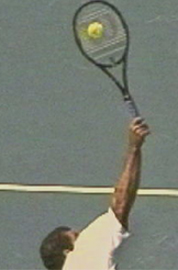
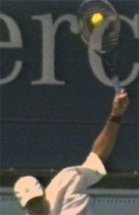
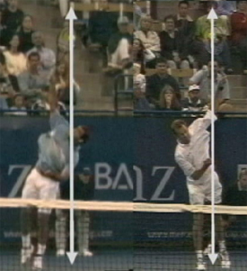

The "Heavy" Serve Practical Implications
What the heavy serve research means for actual returners: positioning, timing, and tactics against the biggest serves.
The "Heavy" ServePractical Implications
By John Yandell
In the first "heavy ball" article on the serves of Pete Sampras and Greg Rusedski, we found that--everything else being equal--a higher topspin component in the serve appeared to produce a heavier ball at the time of the return.
Pete and Greg: more topspin equals more "weight," but not always.
Our data showed that the two players had virtually identical average ball speed and ball spin. But Pete's ball was still heavier at the time of the return. The difference was in the axis of the rotation and the relative amounts of slice and topspin in the balls. Pete had a higher topspin component and this was the difference in the amount of topspin after the bounce and the height of the bounce. Interestingly our data was consistent with first hand accounts of what it was actually like to face the serve of both players. (Click Here.)
Pete's racket moves slightly more upward and Greg's slightly more across.
The Next Logical Question
The next logical question is how did Pete produce that heavy ball? And then, can I do it myself? What were the differences in Pete's motion that produced the difference in the sidespin/topspin balance?
The obvious answer is the path of the racket at contact, and related to this, the position of the ball toss. The angle of the path of Pete's racket appears to be slightly steeper, moving more upwards, compared to Rusedski's, which is moving more sideways and somewhat more across the ball.
We can see this at the contact, and also, in the path of the racket after contact. Rusedski's racket is moving slightly more from his right to his left. It naturally extends more to the side or further away from his body after the hit. Pete's racket is also traveling to the side, but it is also traveling somewhat more upward and forward.


Small differences int angle of the racket indicate the relative topspin component.
If you look closely, this small difference is even visible in the still photos created from the high speed video. Look at the difference in where the tip of the racket points. Sampras's racket tip is tilted back a few degrees more to his left. Rusedski's is slightly more straight up and down. This gives you an idea of the angle that the strings are traveling at during contact. Again, Rusedski's racket appears to being going slightly more across the ball. Pete's appears to be traveling slightly more upward. This difference in the angle of the racket appears to be consistent with the angle of the ball rotation itself.
Remember one of the surprising things we found was that most of the spin for both players was sidespin. There was no such thing as hitting up on the ball from "6 to 12" to create topspin the way many players and coaches believe. The differences in the topspin component were a matter of a few degrees. And it makes sense that the difference in the incline of the racket mirrors this and is also quite close between the two players. This slightly steeper racket path is what changes the axis of rotation of the ball and is the key to generating the additional topspin component in the overall spin.
Is Pete's magic combination the answer for you?
Does the Magic Combination Exist?
So for Pete the magic combination was keeping the velocity at 115mpm-125mph while hitting up more to generate a higher topspin component.
This allowed him to hurt his opponents with sheer speed and hit his fair share of aces. But it also gave him the ability to generate large numbers of unreturnable serves due to weight from the extra topspin and the high bounce this created.
So with this information, are you now equipped to develop the heavy serve you've always dreamed of? Pete Sampras just pulled the toss back to his left and bumped up the topspin component a little bit, so it should be the same for you, right? I don't think it works quite that way.
The truth is that our study of spin on the serve of these players is just one small step in trying to unravel the mysteries of the heavy ball. The whole issue of speed, spin, and type of spin is very complex and difficult to understand. Using our high speed filming and proprietary software, we were able to see at least some of the factors that made Pete's serve so amazing.
But let's be realistic. When it comes to your serve, the question isn't what worked for Pete. If you could match his speed/spin numbers, you wouldn't really need to read this article, now would you?
The real question is what combination of speed, slice, and topspin is going to make your serve as effective as possible for you, at your level of play.
And I think there are a number of possible answers. Because the so-called "heavy ball" is a mix of speed and spin, it's a relative concept. Adding more topspin at one level of velocity may not have the effect that it has at another. In fact, the effect could be the reverse. More topspin could make your serve less heavy not more.
Extreme body rotation and the left ball position--difficult to copy.
If you have read through the site, you may have encountered the series of articles I wrote on Pete's serve. (Click Here.) It's a very detailed look at every aspect of his motion. But like a lot of what I write on this site, I developed that series motivated by mainly by the desire to figure out exactly what was happening in his motion. My purpose wasn't necessarily to suggest that every player at every level copy every aspect of his motion.
And two aspects of his motion are particularly difficult to copy. These are the toss with the far left ball position, and the extreme body rotation. Both are probably key components in producing the super heavy ball. The body rotation creates additional explosive energy. The left ball position allowed Pete to direct some of that energy into topspin.
Ball Position and Weight
Now there is no doubt that moving the toss to the left will help any player create more topspin. The question though is will this make a given serve "heavier"? It may make it bounce higher, but how does it affect the other key component which is the velocity? A heavy ball is fast with heavy spin. You need them both. But "fast" and "heavy spin" differ by level. What might be "heavy" in the juniors won't necessarily be "heavy" in college or in the pros. The same will apply across the vast range of levels in NTRP and club tennis.
The fact is that speed and spin are a trade off. I've heard from more than one source that Pete Sampras could flatten his serve out and hit the ball 140mph or more, and that he did it for fun in practice sometimes. In matches you'd occasionally see him crease 130mph on the radar gun, but in general he hit with less speed and opted for that searing spin, with the high topspin component. And it made his ball almost unplayable.
Jeff Salzenstein: high level experiments with the heavy ball.
But that's not necessarily going to work even for other players at the highest levels of the game. Over the last 3 years I've had a fascinating experience that ended up demonstrating this in my work with former Stanford star and tour player Jeff Salzenstein. Jeff had studied the Advanced Tennis high speed video on his own, and he understood the concept of the Sampras heavy ball. His goal was to improve his already formidable delivery by making his ball heavier and using Pete as a model.
It was a lot of fun collaborating with him and using comparative video analysis to help him develop the elements of the Sampras motion, including both the increased rotation and the ball position on the toss. I say collaboration because Jeff continually amazed me with his perceptiveness and his natural intuition about what to do with the information we were developing. It was incredible just being on the court standing next to someone who could do the things Jeff can do.
While we were working together, Jeff won a Challenger, qualified for the U.S. Open, and moved up over 50 spots to the edge of the top 100 on the computer. But part way through the process he moved away somewhat from the extreme heavy ball concept. He felt that he was trading too much speed to get the heavier spin, and that he was generating serves that weren't as difficult to return as he had hoped. For whatever reason, he couldn't make the pure Sampras motion produce quite as much velocity to go with the additional topspin. And this was a player known for having a very good serve by tour standards. Just ask some of the other players.
So Jeff repositioned his toss somewhat, moving it further away from his body, slightly more to the side, and lowering the height. He kept many of the changes we made in his stance and body rotation, but went back toward hitting the ball flatter and harder, even at the risk of not getting as many first serves in the box.
What really happens when you move the ball left to add spin?
This is exactly the same trade off faced by players at every level--from the tour all the way down to the club player. What happens when you add topspin and reduce speed? Does that it make your serve easier or more difficult to return? That's probably the real definition of "heaviness". Does the ball feel nasty and uncomfortable for the opponent at the other end of the court.
What About Lower Levels?
I can use my own experience as an example at a much lower level. When I was playing Norcal senior events, I played a guy I'll call "Bruce" several times. Bruce was absolutely determined to hit one-handed topspin backhand returns on both first and second serves. Now that's unusual, especially in senior tennis. And if he got a hard relatively flat serve (from me anyway), he could actually do some damage, particularly hitting down the line in the ad court. But only if he could get the ball at about waist level.
Once I noticed this, I started pulling my toss a little more to the left and hitting "heavier" spin serves to his backhand on literally every point. The ball wasn't that fast, but it would get up to his around shoulder. He would try to come over it, but he couldn't control the ball. It was amazing to witness, because Bruce missed virtually every backhand return. I mean he got 5 or 6 returns in play in the course of a match.
He never once tried to move over and get around the ball to hit forehand returns, even though he knew exactly where I was going to serve. It must have been some kind of bizarre matter of principle, but I certainly didn't care. He wasn't that bad a player, but since he barely made me play on my serve, I beat him far more easily than I thought I should have. Paradoxically I would have probably had a tougher time with him if I had mixed up my serve the way I usually try to.
So there's a page out of the heavy ball story that is probably closer to reality for most players than Pete Sampras. A heavier topspin component can make the ball unplayable under certain circumstances at any level. But the important point is that this application was purely situational. Hitting the same serve was a liability against the top players in the Norcal seniors. I know because I tried. They would step in, clean it on the rise and that was quite unpleasant and discouraging. The point is that unless you're the greatest player in the history of the game and can win 14 Grand Slams, there is no probably absolute "heavy" speed/spin combination.
The women: tossing further to the right and hitting speed but less topspin.
The Women: Different Or?
The women's pro game is interesting in this respect. You see the women regularly serve 100mph plus, up to even 125mph. But in general you see them do this from a ball position much further to the right than Pete or the other top men. If you look at Lindsay Davenport in the high speed footage, you can see this. Looking at the angle of her racket at contact, you can see that the topspin component is minimal in her ball. The racket is more straight up and down than either Pete or Rusedski.
It's possible of course that the women just haven't been trained to serve with the same technical elements you see in Pete's motion. (Justine Henin-Hardenne is one exception.) Or maybe they just feel that to generate that kind of speed, they need to hit much flatter. The top woman may sense that the sheer speed is what hurts their opponents, and topspin reduces their ability to do this. With the relative perspective we've adopted, velocity may be what makes their serves seem "heavy" . On the other hand, maybe the women's game is just waiting for a player who can hit 115mph and create high topspin component.
How many service motions and how many different serves?
How Relative Is It?
So if it's all so relative, what about the idea of having it both ways, developing multiple serves, and then just adjusting speed and spin, depending on a given opponent or situation? There is a theory of serving that goes like this: toss the ball to the right and hit slice, toss to the left and hit topspin, and toss somewhere in the middle and hit flat. Won't that give you more variety and effectiveness?
This strategy is still widely taught at the recreational level. It may sound logical, but it is really bad advice. You just don't see it among successful competitive players. But isn't that exactly what I did with Bruce? Not really. Remember, I hit the same serve off the same toss to the same side of the box on every point. That was my one and only serve for that match, all off the same motion and toss. And there's a reason for that.
It's hard enough to just have one service motion with one toss, let alone two or three. No player can go back and forth like that and be consistent. Not to mention that if you use different tosses on different serves you instantly telegraph what you are about to do.
Which serve goes down the middle and which goes wide?
One Pro Element
So if there is one thing we all can definitely model from the pros it is hitting all the serve variations with basically the same motion and the same toss. Being a complete player means being able to go down the middle and wide off the same toss, and to vary the amount of spin as much as possible as well. Watch the incredible Sampras animation as he hits a serve down the middle and then wide in the deuce court. Can you read which serve is coming? The reality is that the difference is a slight change in the path of the racket to the ball, a change that occurs literally hundredths of a second before contact.
The difference is probably a few degrees in the angle and the path of the racket head, but that few degrees is enough to send the ball straight down the T or hooking wide to the service box sideline. Our studies show that this is also enough to allow the top players considerable flexibility in varying the amount of spin, even on balls delivered to essentially the same location. The chart below shows this, comparing the ranges of spin for Sampras and Rusedski on serves to all 4 corners of the service boxes.
As we saw the average spin values were virtually the same. Interestingly, the same was true for the range of spin. Sampras had a spin range from 1306 rpm to 3916 rpm. Rusedski's range was almost identical, at 1222 rpm to 4025 rpm.
Spin Range
Sampras:
Spin
Range
Deuce Down the T
Ad Down the T
Deuce Wide
Ad Wide
1646 rpm--
1222 rpm--
1419 rpm--
1306 rpm--
2946 rpm
2651 rpm
3916 rpm
3820 rpm
Rusedski:
Spin
Range
Ad Down the T
Deuce Down the T
Ad Wide
Deuce Wide
1222 rpm--
2311 rpm--
2883 rpm--
2129 rpm--
2651 rpm
3049 rpm
4025 rpm
3335 rpm

Sampras and Rusedski probably define the extremes in toss placement.
So for the average player looking to have the heaviest possible delivery AND the maximum potential for variety, the key question is going to be where to position the ball on the toss. How far to the right or left to produce what combination of speed and spin?
We can get a good idea of the potential range of toss placement from left to right if we look at the still image comparing Sampras and Rusedski. But I don't think that we can say that being at one end of the range or the other is automatically better for any given player.
A Personal Experiment
Yes, if you can keep the serve speed high enough and trade some sidespin for some topspin, then, like Pete, you might produce a ball that will dominate at your level. And personally I hope you do! I think it's an experiment every player should have the excitement of conducting for himself, or herself. As you experiment keep one other critical factor in mind. If you pull the ball back to the left, the contact should still stay at the edge of the plane of the body. Many players make the mistake of pulling the ball to the left, but also moving it too far back so the contact is actually behind the front edge of the body.
Federer: a beautifully balanced compromise?
We can look at one more player who conducted that experiment pretty successfully: Roger Federer. His contact is probably somewhere in between the extremes of Pete and Greg.
Watch how his contact is just at the front edge of the body, and also how beautifully he lands on balance with his torso more erect than either of those players.
More later on his whole service motion and his speed and spin values. But suffice it to say that he has found a very effective balance that works within his capabilities and style of game. Is that the understatement of the tennis year so far? Probably. And it's probably not a bad place to start your own experiment.

John Yandell is widely acknowledged as one of the leading videographers and students of the modern game of professional tennis. His high speed filming for Advanced Tennis and Tennisplayer have provided new visual resources that have changed the way the game is studied and understood by both players and coaches. He has done personal video analysis for hundreds of high level competitive players, including Justine Henin-Hardenne, Taylor Dent and John McEnroe, among others.
In addition to his role as Editor of Tennisplayer he is the author of the critically acclaimed book Visual Tennis. The John Yandell Tennis School is located in San Francisco, California.
Source: tennisplayer.net archive — The Heavy Serve - Practical implications.docx (John Yandell teaching library, 2002-2022). Extracted and rendered as HTML for Tennis Future Lab.